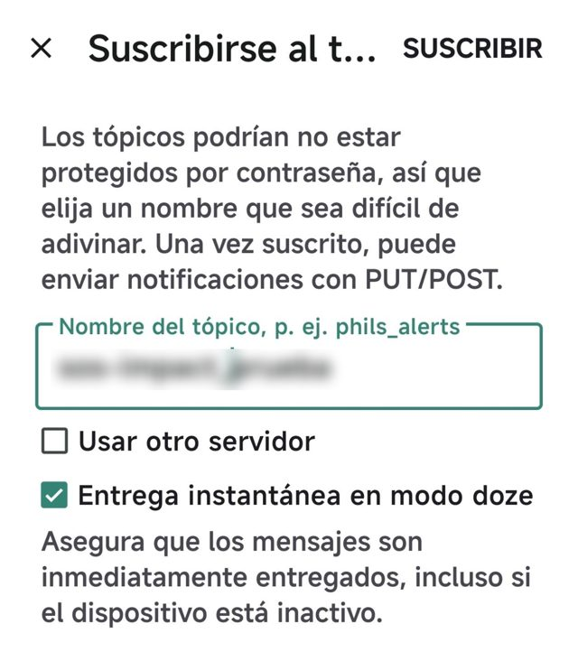

自动短信和电话
Android 分步指南（ntfy + MacroDroid）
重要。这是一个 Android 附加功能，需要您自己设置和维护：它不是急救服务，也不能替代您当地的急救电话。它依赖网络、电量以及 Android 不关闭应用。使用前务必测试，并且在更新手机或更改电池设置后再次测试。
您将得到什么
当手表检测到跌倒或您按下 SOS 时，您的手机会自动向您选择的人发送一条包含一句话和您位置链接的短信（如果您愿意，还可以拨打电话）。手表本身无法发送短信（Zepp OS 不允许），因此路径是：手表 → 手机上的 Zepp 应用 → ntfy（推送警报）→ MacroDroid → 短信。
您需要：一部已安装 Zepp 应用并设置好 SOS Impact 的 Android 手机、免费的 ntfy 应用，以及 MacroDroid 应用（免费版足够用于一个宏）。在 iPhone 上无法自动发送短信：请改用 Telegram 或 ntfy。
- 在 SOS Impact 中启用 ntfy。在 Zepp 应用中打开 SOS Impact 的设置，找到 ntfy 警报（可选）框，点击启用 ntfy。会出现一个秘密主题，形如
sosimpact-…。点击发送 ntfy 测试，并确认显示“测试已发送到 ntfy”。复制该主题：您将在第 2 步和第 4 步中用到它。请勿公开：任何知道它的人都能读到您的警报。
Zepp 应用中的 SOS Impact 设置：显示秘密主题的“ntfy 提醒”框和“通过 ntfy 发送测试”按钮。（示例图片。） - 安装 ntfy 应用并订阅。安装 ntfy（Google Play 或 F-Droid），点击 + 并输入第 1 步中的主题（服务器使用 ntfy.sh，除非您使用自己的服务器）。发送测试时必须收到一条通知。如果没有收到任何内容，请检查主题是否输入得完全一致。

ntfy 的“订阅主题”界面（截图为西班牙语）：输入您的主题（此处已模糊处理），然后点击订阅。 - 在 ntfy 中打开“广播消息”。在 ntfy 中：⋮ → 设置 → 向下滚动到广播消息并启用它。不启用的话，ntfy 不会通知 MacroDroid。

ntfy 设置：已启用“广播消息”（截图为西班牙语）。 - 在 MacroDroid 中创建宏：触发器。宏 → + → 触发器 → 设备/应用 → 收到 Intent。填写：
字段 值 操作（Action） io.heckel.ntfy.MESSAGE_RECEIVED包名（如果出现该字段） io.heckel.ntfyIntent 附加项 1 — 名称 topicIntent 附加项 1 — 要匹配的值 仅填写您的主题，例如 sosimpact-abc123（不要加“topic=”，也不要有空格）Intent 附加项 2 — 名称 titleIntent 附加项 2 — 要匹配的值 ?*（至少一个字符：这样宏只在带标题的首次警报时触发，而不会被后续消息触发）Intent 附加项 2 — 保存到变量 点击 + 并创建一个名为 titulo的文本变量最常见的错误是附加项名称填成了别的词，或者在值前面加上了
topic=：名称必须严格是topic。
“收到 Intent”界面及两个附加项： topic填你的主题，title保存到变量titulo。title的匹配值请填?*（至少一个字符）；如果像本示例图那样只填*，后续消息也会触发宏。请不要勾选“启用正则表达式匹配”。（示例图片。） - 动作：发送短信。动作 → 发送短信。选择联系人或输入号码，文本只填变量
[lv=titulo]：它已包含警报语句和您的位置链接（无位置时会写明位置不可用）。请用文本框的 “...” 按钮 → 本地变量 →titulo插入；使用方括号[ ]，不要用花括号{ }。您可以在前面加上自己的一句话。如果您愿意，可以在短信之后再添加一个拨打同一号码的通话动作。![MacroDroid 的发送短信动作，文本为 [lv=titulo]](../img/macro-sms.jpg)
“发送短信”动作：请选择有信号的 SIM 卡（若选择显示“无服务”的卡，短信会发送失败），输入号码，文本填你自己的话加上 [lv=titulo]。（示例图片；号码已隐藏。）
完成后的宏：“收到 Intent”触发器及其下方的动作（通话和短信），截图为西班牙语。联系人姓名已模糊处理。 - 授予权限。MacroDroid 会请求短信和电话权限：请接受。如果您不是通过 Google Play 安装的 MacroDroid，且 Android 阻止了这些权限，请前往手机设置 → 应用 → MacroDroid → ⋮，然后点击允许受限设置。
- 防止 Android 关闭这些应用。手机设置 → 应用 → ntfy 和 MacroDroid → 电池 → 无限制（或“不优化”）。在某些品牌（小米、华为、三星……）上，还要启用“自启动”或“在最近任务中锁定”。在 ntfy 中，您可以将该主题静音，以免响铃两次（短信已经会提醒）。
- 测试。先用 SOS Impact 的发送 ntfy 测试按钮，再在手表上进行手动 SOS。必须收到带链接的短信。在 MacroDroid 中，该宏会显示“几秒前已执行”。请事先告知您的联系人您正在测试。
如果无法工作
| 现象 | 检查内容 |
|---|---|
| 宏显示“数小时前已执行”且不再变化 | 警报没有到达它：请检查第 3 步（广播）、第 4 步（附加项名称为 topic，值不带“topic=”，以及包名），并确认 ntfy 已订阅该主题。 |
| 宏运行了但没有发送短信 | 短信权限（第 6 步）、SIM 卡有余额/可发短信、号码输入正确。 |
| 短信里没有链接 | 警报没有携带位置（手表没有获得 GPS，或这是没有位置的 ntfy 测试）。短信仍会发送，并说明位置不可用。 |
短信里显示文字 {lv=titulo} | 您输入了花括号而不是方括号。删除后用“...”按钮插入变量（会变成 [lv=titulo]）。 |
| 能用一段时间，然后就不行了 | Android 让这些应用进入了休眠：请检查第 7 步并再次测试。 |
| 我想停止使用 | 在 SOS Impact 中点击停用 ntfy，并删除 ntfy 中的宏和订阅。 |
| 测试动作时出现“sms sending”错误 | 在动作中选择有信号的 SIM 卡（不要选“无服务”的卡）。先用固定文本（如“测试”）试一下；如果成功，问题就出在变量文本上。 |
隐私
ntfy 警报经由 ntfy.sh 服务器（或您自己的服务器）传输，其唯一的“密码”就是秘密主题：请勿分享，如果您认为它已泄露，请更换（停用 → 启用）。短信由您自己的手机通过您的运营商发送。为了更好地保护隐私，您可以使用自己的 ntfy 服务器（ntfy 服务器字段）。